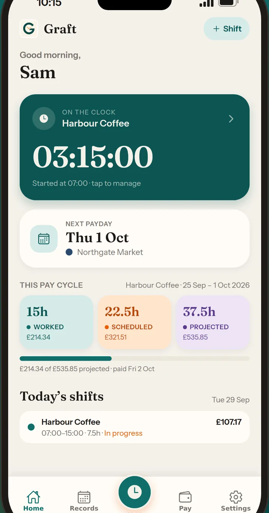
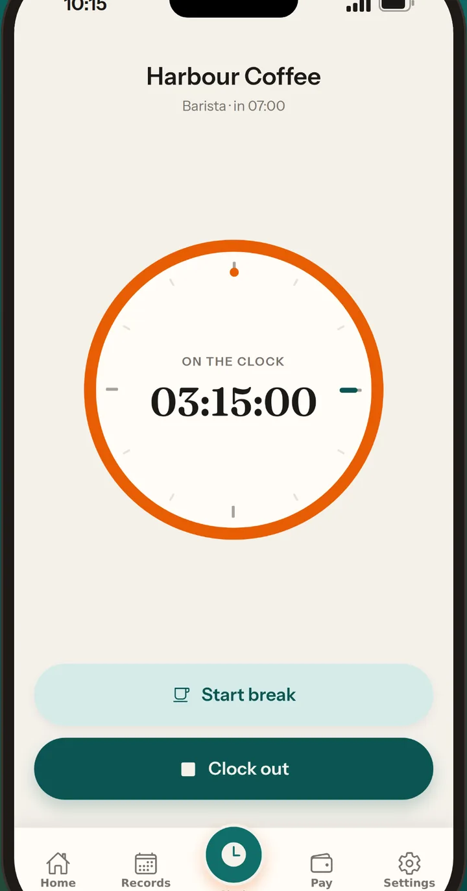
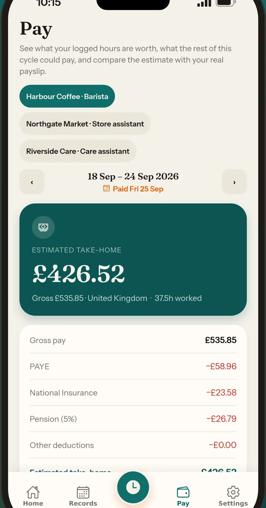
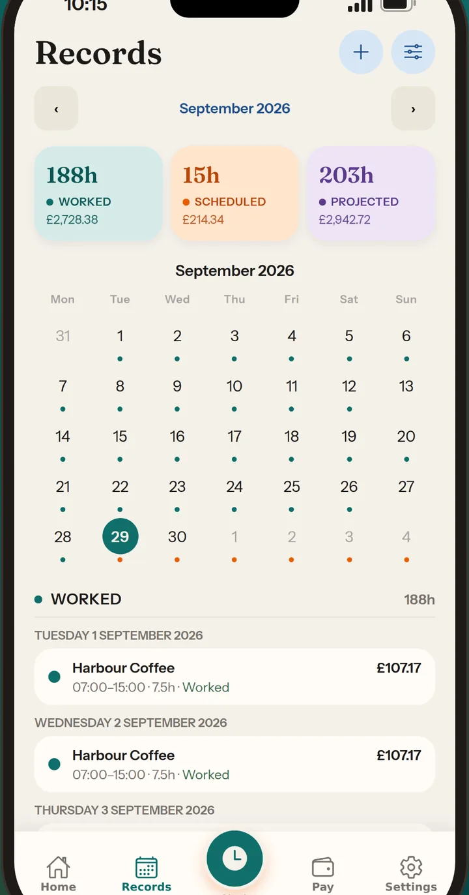

Free
£0
- 2 active jobs
- 1 shift template
- Clock, Records and Pay
- CSV export
- Reminders, widget and Live Activity
- Backup file, or optional iCloud
For hourly work
Clock in, log every job, and see an estimate of what you’ll take home.

One tap for today’s shift. Breaks pause the timer. Overnight shifts are included, and you can correct the times before you save.
Look at a week, a month or a pay cycle. More than one job can sit in the same view.
Gross, tax, National Insurance and pension, from the settings on each job. The figures are estimates, not a payslip.
Each job has its own rate, overtime, holiday pay and pay cycle. Save a shift as a template. Free includes 2 active jobs and 1 template.
A reminder before a shift, and an optional nudge when you arrive at a saved workplace. The Home Screen widget shows what’s next. A Live Activity stays up while you are clocked in.
Jobs, shifts and pay stay on the iPhone. Export a backup file or a CSV, or turn on an optional copy in your own iCloud.



£0
Best value · Save 44%
£2.99/month
or £19.99/year, with 1 month free for a new subscriber. That is 44% less than twelve months at £2.99 (£35.88).
Monthly has no free trial. The yearly free month converts to £19.99 a year unless you cancel at least 24 hours before it ends. Apple bills the subscription. Prices on the subscribe button come from the App Store.
Open Graft, sign in, then go to Settings → Account. Monthly is £2.99 with no free trial. Yearly is one month free for a new subscriber, then £19.99 a year. The plan you pick shows the price from the App Store, with Subscribe and Restore purchases.
On the same iPhone Apple ID that bought Premium, open Settings → Account → Restore purchases. Restoring puts Premium on the Graft account you are signed in to.
Graft cannot cancel an Apple subscription from inside the app. Apple bills it and Apple cancels it.
The yearly free month converts to £19.99 a year unless you cancel at least 24 hours before the trial ends. After that, and for monthly, cancel at least 24 hours before the period ends to stop the next renewal. Premium stays available until the time you already have ends. Deleting the app, or deleting your Graft account, does not cancel the subscription.
Payment, renewals and refunds are handled by Apple under the Apple Licensed Application End User License Agreement.
Graft does not know your tax code, student loan, or every deduction your employer applies. Compare the estimate with your payslip.
Jobs, shifts and pay stay on the iPhone. Sign-in (name and email) is handled by Clerk. An iCloud backup, if you turn it on, goes to your own iCloud account. See the Privacy Policy.
Cancel in your App Store account settings, at least 24 hours before a trial or paid period ends. The steps are in Subscriptions. Deleting Graft does not cancel the subscription.
Email nskhuenkhoksung@live.com. Include the iOS version and what you expected to happen.
Privacy questions can use the same address. The Privacy Policy and Terms of Use describe what the app does today.